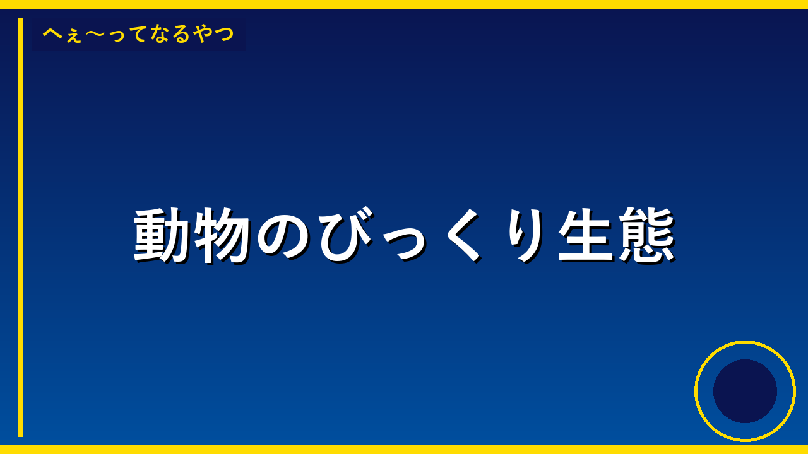
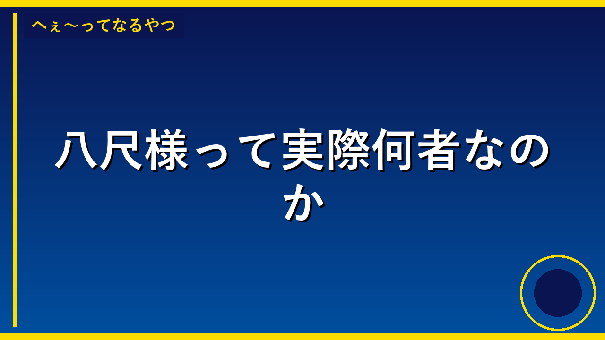
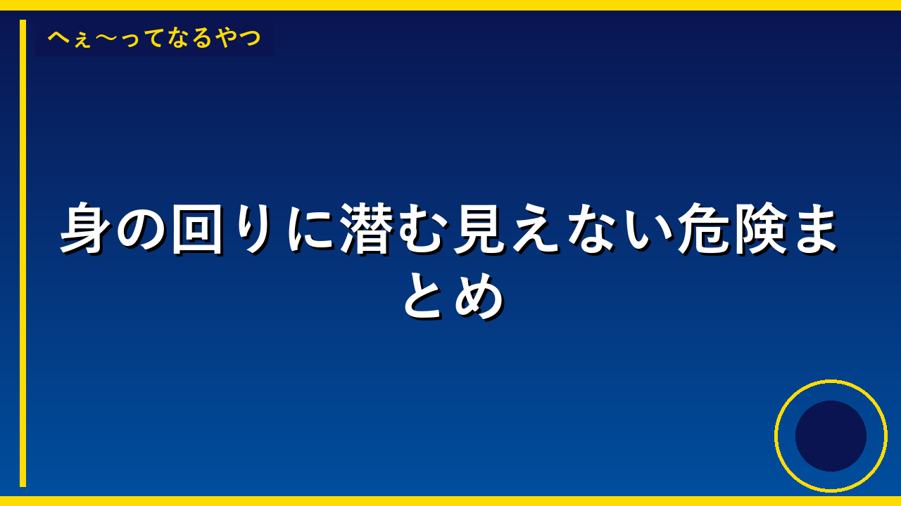
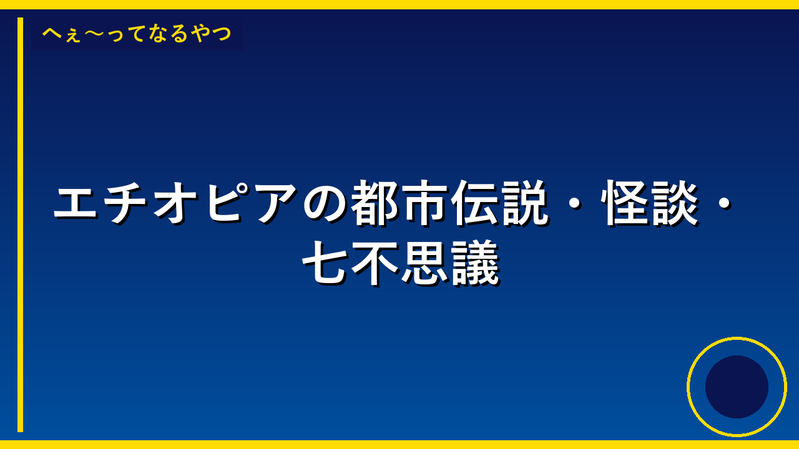
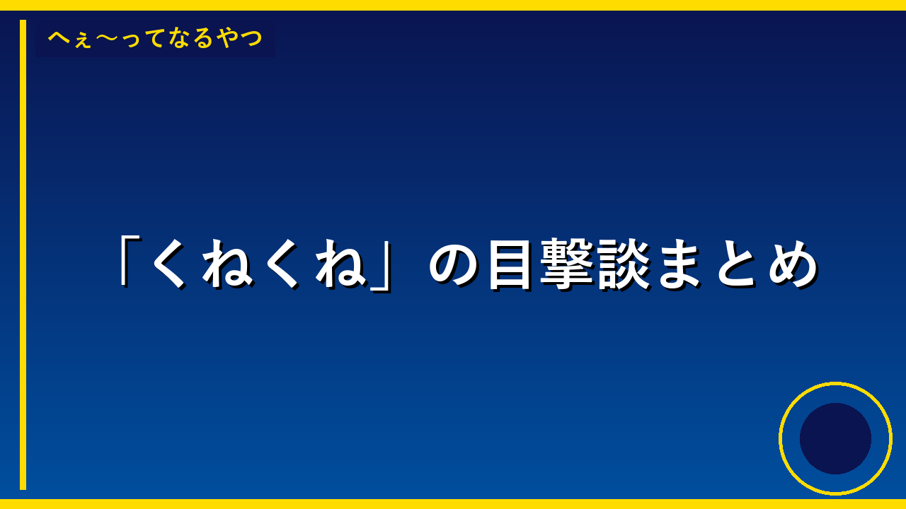

刃物所持の男が立てこもり 愛知
# 申し訳ございません 申し訳ありませんが、提供していただいたリンク先の記事の内容を確認することができません。記事の本文をテキストで教えていただければ、小学生でもわかるように要約させていただきます。 記事の内容をコピー&ペーストしていただけますでしょうか？

健康診断に一気に食べるとリスクが生じる？空腹感を紛らわせるコツも
健康診断の日は朝ご飯を食べないので、診断が終わった後にたくさん食べたくなりますね。でも、甘いお菓子やご飯をいっぱい食べると、血糖値が急に上がって体に悪い影響が出てしまいます。そこで大切なのは、野菜やお肉などのたんぱく質を先に食べて、ゆっくりよくかんで食べることです。こうすることで、血糖値の急上昇を防ぐことができます。

STARTO社関西発グループが集結 2日間累計12万人が熱狂
STARTO社という大きな芸能事務所の関西出身のアイドルグループたちが、大阪の万博記念公園で2日間かけて大きなコンサートを開きました。SUPER EIGHTやなにわ男子などの有名なグループが歌ったり踊ったりして、合わせて12万人もの人たちが集まって楽しみました。最後には新しい曲「HEY YOUNG!」を歌ったあとに、800発の花火が空に打ち上がって、みんなで盛り上がりながらイベントが終わりました。
Google、宇宙のTPUから初のAI応答を受信 「Project Suncatcher」試作衛星で「Gemma 4」が俳句を詠む
Googleが宇宙に打ち上げた試作衛星の中にあるAIコンピュータから、初めて返事をもらうことができました。このAIは「俳句を作って」と指示されて、ちゃんと俳句を作ることができたので、宇宙でもAIが正しく働くことがわかりました。GoogleはこれからこのAIコンピュータが宇宙で安全に動くかどうかをくわしく調べる予定で、もし成功すれば、将来は宇宙にもデータセンター（コンピュータの大きな置き場所）を作ることができるかもしれません。
FBI、Binanceからの60億ドル超の暗号資産窃盗は北朝鮮「TraderTraitor」の犯行と発表
アメリカのFBIが、大きな暗号資産（デジタルのお金）の取引所から約60億ドル（日本円で数千億円）ものお金が盗まれたのは、北朝鮮という国がコンピューターを使った悪い事をしたせいだと発表しました。盗まれたお金が他の国で使われないように、FBIが会社に注意を呼びかけています。ただし日本の利用者のお金は安全に守られているので、日本に住んでいる人は心配する必要がないということです。
Anthropic、「Claude」の「Max 20x」を「Ultra」に名称変更 月200ドルで5時間ごとの利用制限を撤廃
AIの企業アンスロピックが、人気のAI「Claude」の高級プランの名前を変えました。月200ドルの最強プランを「Max 20x」から「Ultra」という名前に変えて、たくさん使える制限を外しました。これにより、より多くのお金を払う人は、制限を心配せずにClaudeをたくさん使えるようになったので、仕事や勉強で毎日Claudeを使う人にとって便利になります。

リヨンのフォンセカ監督が勝利後に涙、スポルティング接触で去就に注目
リヨンというサッカーチームの監督フォンセカさんが、昔いたスポルティングというチームから戻ってくるように言われました。フォンセカさんは今のチームでいい成績を出していますが、前のチームからの誘いで、辞めるかもしれません。本人は「もしかしたら辞めるかもしれない」と言っていて、どちらに行くか決まっていません。この決断は、リヨンというチームの今後に大きな影響を与えることになります。

槙野監督への処分で再燃するJ2判定問題、鄭大世氏が語る向き合い方
藤枝MYFCの槙野監督が試合後に審判を批判したため、2試合出場停止と罰金10万円の処分を受けました。この事件によって、J2リーグの判定が正しくないという問題が改めて注目されるようになりました。元選手の鄭大世さんは「もしより良い判定を望むなら、上のレベルのリーグに上がることを目指すべき」とアドバイスしています。つまり、審判の質を上げるには、リーグ全体のレベルを高めることが大切だということです。

「サンモニが2週連続で巨人・松井監督を取り上げず、SNSがざわつく」
TBSの「サンデーモーニング」という朝のテレビ番組が、野球の巨人という有名なチームの新しい監督になった松井秀喜さんについて、2週間連続でニュースとして取り上げませんでした。松井監督は10月23日に新しい監督に決まった大事なニュースなのに、この番組で放送されなかったため、インターネットで「おかしい」という声が広がっています。他のテレビ局では松井監督のニュースを放送すると、より多くの人が番組を見るようになるということなので、視聴者は「なぜこの番組だけ取り上げないのか」と疑問に思っているのです。

アスリートの妻たちが福原遥を心配「久保選手なんて世界背負っちゃってる」
アスリートの妻たちが、テレビ番組で福原遥さんが受ける批判について心配していることがわかりました。福原遥さんは有名なサッカー選手・久保建英さんと結婚したため、世界中からいろいろな意見や批判がSNSで来るかもしれないと懸念されています。これは、有名選手と結婚した人たちがプライベートでも大きなプレッシャーを受けることがあり、みんなで応援して守ることが大切だということを伝えています。

あばれる君 合格率0.18％の超難関資格保有していた、どや顔で認定証披露
あばれる君が、とてもむずかしい「世界遺産検定マイスター」という資格に合格したことがわかりました。この資格は、受かる人がわずか0.18%しかいないほど超難関です。あばれる君は番組で金色の認定証を見せて、「世界遺産がしゃべれる君です！」とジョークを言い、スタジオの人たちを笑わせました。これは、テレビタレントが勉強を頑張って難しい資格を取ったという、すごく素晴らしいことなのです。

ラッパーのネリーが予算の少なかったテイラー・スウィフトとの共演を回顧
申し訳ありませんが、記事の内容が表示されていないため、要約することができません。 記事へのリンクのみが示されており、実際のテキスト内容がありません。記事の本文をコピー&ペーストしていただければ、小学生でもわかる言葉で要約させていただきます。

『Phantom Blade Zero』はいろんなエッセンスも感じて面白い……けどルビが欲しい。『ファイナルファンタジー レゾナンス』はRPGの幕の内弁当。『Nintendo Switch Sports Resort』ゆび相撲は実質格闘ゲーム。今週のゲーミング
今週のゲーミングコーナーでは、3つの新しいゲームが紹介されました。『Phantom Blade Zero』は面白いゲームですが、漢字に読み方がついていないため読みにくいという問題があります。『ファイナルファンタジー レゾナンス』はいろいろな種類の楽しさが詰まったRPGで、『Nintendo Switch Sports Resort』のゆび相撲は格闘ゲームのように奥が深いゲームだということがわかりました。ゲーム好きなライターたちが毎週いろいろなゲームの感想を書いているコーナーです。

『ロックマン コンプリートパック』は「30作以上」おまとめなのに80％オフでなんと約5000円。『Outlast 2』は90％オフでわずか230円。今週の高割引率PCゲーム
パソコンゲームを売っているSteamというお店で、今週とてもやすくなったゲームがたくさんあります。「ロックマン」という有名なゲームの30以上のシリーズがまとめて売られているのに、8割も安くなって約5000円で買えるようになりました。また「Outlast 2」というゲームは9割も安くなって、わずか230円という驚くほど安い値段になっています。このようなセールがあると、普通は高くて買えないゲームを安く遊べるようになるので、ゲーム好きな人たちにとってとても嬉しいチャンスになります。

『キングスフィールド』『TES3』に着想を得たARPG『Queen’s Domain』、Steamで“94％好評”の大盛況。「探索で迷う楽しさ」を詰め込んだ、秘密だらけレトロファンタジー
「Queen's Domain」というゲームが発売されて、インターネットの販売サイトSteamで94%の人から「面白い」という高い評価をもらいました。このゲームは、昔のゲームの雰囲気を大切にしながら、広い世界を探索する中で迷ったり、隠された秘密を見つけたりする楽しさがたくさん詰まっています。多くの人がこのゲームを楽しんでいることで、古いゲームの面白さを大事にする新しいゲームが、今の時代でも人気があることがわかりました。

『薬屋のひとりごと』猫猫と壬氏がスクラッチに！ オリジナルグッズが当たるキャンペーンも開催中！
人気アニメ『薬屋のひとりごと』のキャラクター・猫猫と壬氏が、スクラッチくじに登場することになりました。このスクラッチくじを買うと、アニメのオリジナルグッズが当たるチャンスがあります。このキャンペーンによって、アニメのファンがもっと増えたり、グッズを通じてアニメをもっと好きになる人が増えたりすることが期待されています。

2027年4月放送「ガンダムRG XARX-ZERO」よりガンダムZEROが立体化！ 劇中再現を可能とする可動域を追及♪
ガンダムという有名なロボットアニメの新しい作品が2027年4月に放送されることになりました。その作品に出てくる「ガンダムZERO」というロボットが、おもちゃとして商品化されることが決まったのです。このおもちゃは、アニメの中でロボットが動く様子をそのまま再現できるように、関節がいろいろな方向に動くように工夫されています。ファンの人たちは、大好きなアニメのロボットを手に取って遊べるようになるので、とても楽しみにしているでしょう。

アニメ「DEATH STRANDING ISOLATIONS」脚本は冲方丁 金髪少女とクレーターが登場するティザー映像も
ゲームの「デスストランディング」をアニメ化する作品が作られることになりました。この作品の物語を作る人は、「天地明察」という有名な本を書いた冲方丁という作家です。ティザー映像では、金髪の女の子とクレーターという大きな穴が登場して、どんなお話になるのか期待を集めています。このアニメが作られることで、ゲームの世界がより多くの人に知られるようになり、アニメ好きやゲーム好きな人たちが楽しめる作品が増えることになります。

GMOグローバルサイン、ID管理サービスの設定ミスで顧客4.5万人分が漏えい
# 要約 申し訳ございません。記事の詳細な内容が確認できないため、正確な要約ができません。 ただし、タイトルから推測される内容であれば以下のようになります： GMOグローバルサインという会社が、お客さんの情報を守るシステムの設定を間違えてしまい、約4万5千人のお客さんの大切な情報が外に漏れてしまいました。このような情報漏えいは、お客さんの個人情報が悪い人に使われてしまう危険があるため、とても重要な問題です。今後、会社はシステムをもっときちんと確認して、同じ間違いが起きないようにしなければなりません。 正確な要約をご希望でしたら、記事の本文をお知らせいただければ、より詳しく説明できます。

アップル初の折りたたみiPhone Duo、薄さと引き換えのカメラ性能を検証
アップルが初めて作った折りたたみスマートフォン「iPhone Duo」が発売されました。このスマートフォンは、薄くて折りたたためるように作られているので、カメラの性能は他のiPhoneよりも少し低くなっています。でも、折りたたむと大きな画面が使えるので、写真を見るのにはとても良いと評判です。このように、薄さと大きさを取るために、カメラ性能をあきらめた新しいスマートフォンが登場したということです。

アルファードが敷地からはみ出し…ママ友に指摘された家計の盲点
年収500万円の家族が3000万円の家を買ったのに、さらに高い車（アルファード）も買ってしまい、その車が家の敷地からはみ出てしまう問題が起きました。この家族のお金の使い方には問題があり、車の価格は年収の半分くらいが目安なのに、それを大きく超えてしまっています。もし敷地からはみ出た状態で置いておくと法律に違反する可能性があるので、月極駐車場を借りるか、もっと小さい車に買い替えるか、夫婦で話し合う必要があります。この事例は、家と車の両方に大きなお金をかけすぎると家計が大変になることを教えてくれています。

「過半数が有名な日本人を知らない」米ビーチで判明したリアル
アメリカのビーチで日本人がインタビューして、「有名な日本人は誰ですか？」と聞きました。すると、26人のうち14人が「有名な日本人を知らない」と答えて、一番多い結果になりました。知っている人の中では、野球選手の大谷翔平さんが一番有名でした。このことから、アメリカの人たちの間では日本人の有名人がまだあまり知られていないことがわかりました。

バーナム英首相が大西洋奴隷貿易への正式な謝罪を検討、賠償は拒否
イギリスの首相が、昔イギリスが行った奴隷貿易（人を無理やり売り買いしていたこと）について、申し訳ないと言うことを考えています。でも、お金を払って直す（賠償）ことはしないと言っています。奴隷貿易は何百年も前にアフリカの人たちに大きな苦しみを与えた悪いことなので、謝るかどうかが大事な問題になっています。この決断は、奴隷貿易で傷ついた国の人たちから、意見が分かれることになりそうです。

トランプ大統領がイランの地下核施設を名指し「10分で対処できる」と強調
トランプ前大統領がイランの地下にある核の施設について、「10分で対処できる」と言いました。これはイランが核兵器を作ろうとしているのではないかという心配があるからです。このような発言は、アメリカとイランの関係がとても緊張していることを示しています。もし本当に戦争になってしまうと、中東地域全体が大変なことになる可能性があります。
ラッコが手をつないで眠る理由 石を持ち歩く驚きの習性とは
海に浮かんで眠るラッコには、流されないための工夫があった。お気に入りの石を持ち歩く理由も含め、知られざる生態を紹介する。

八尺様は2008年生まれ？一投稿から広がった都市伝説の正体
身長2m40cmの白装束の女性が若い男性を襲う怪談「八尺様」。実は2ちゃんねるの一投稿から始まった都市伝説だった。

実は便器より汚い？身近な「バイ菌の温床」4選
毎日触るスマホやキッチンスポンジ、実は想像以上に細菌だらけ。知らずに放置している衛生リスクを専門家の調査データとともに紹介します。

エチオピアの「呪いの壺」事件、血を混ぜた陶器の恐怖
2003年、首都の市場で売られた壺を買った家族が失踪。調査で壺から人の髪と爪が発見され、製作者は古代の呪術書に従ったと供述した奇妙な事件。

見たら精神病院へ？ネット怪談「くねくね」の正体と目撃談
2003年にネット掲示板で誕生した都市伝説「くねくね」。白い人型の何かを見た人が次々と精神を病んだという恐怖の目撃談は、今も語り継がれている。